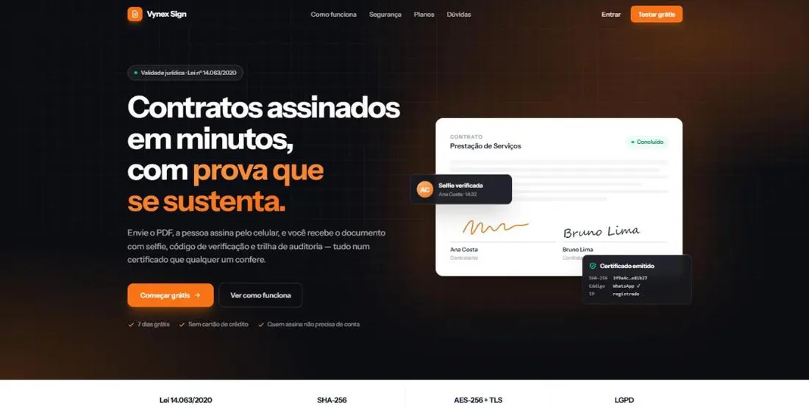
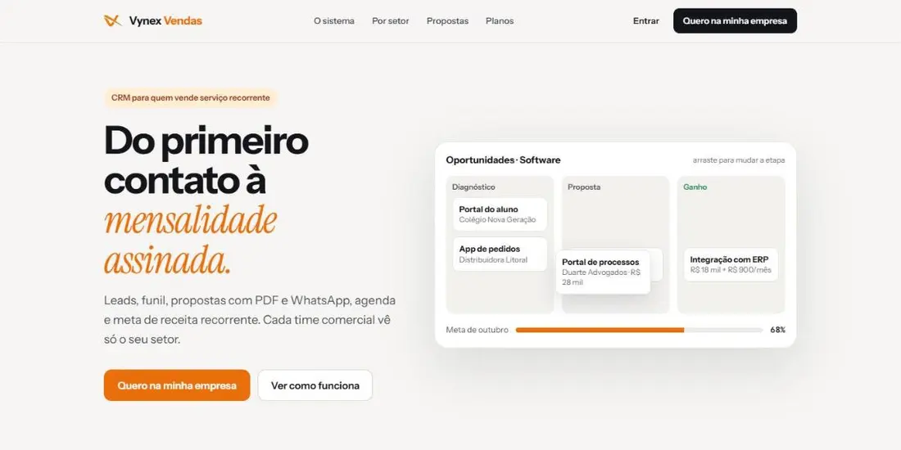
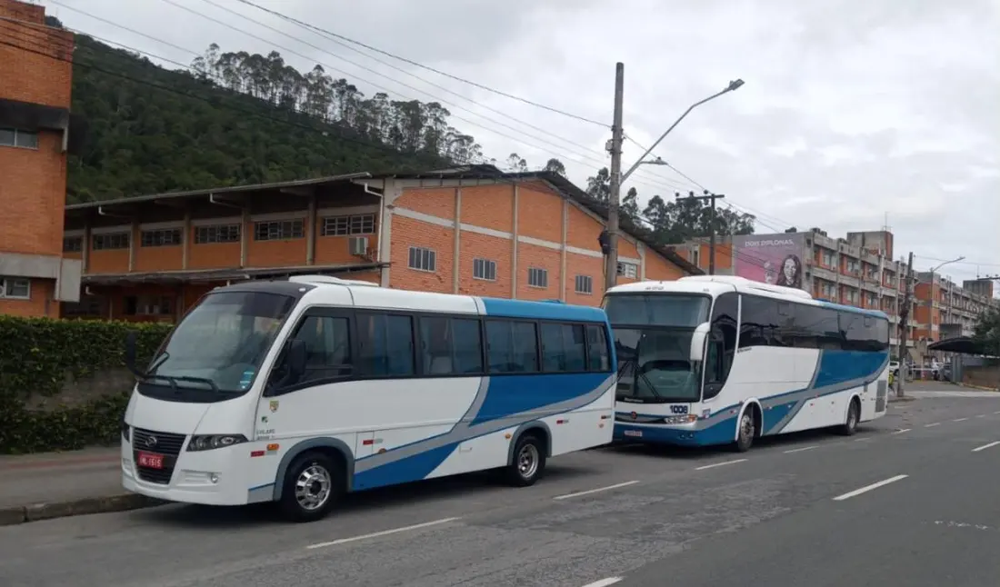
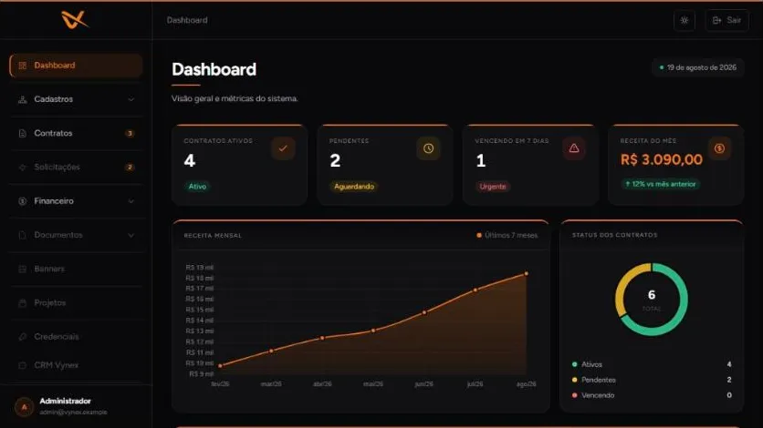
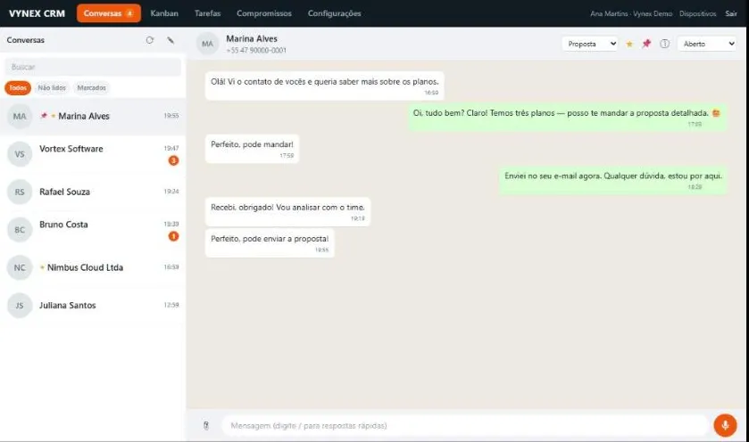

sign.vynexsystems.com
Vynex Sign
Assinatura eletrônica pelo celular, com selfie, código de verificação e trilha de auditoria.
Sou desenvolvedor, co-founder da Vynex Systems e estudante de Ciência da Computação na UNIVALI, em Itajaí. Trabalho com desenvolvimento na Ayamo Global Foods, uma trading de alimentos, e gosto de construir sistemas que as pessoas usam no dia a dia. Aqui estão alguns dos sistemas em que trabalho.


Ayamo Global Foods · importação e exportação de proteína · Desenvolvedor único
Um lugar só para os painéis e as ferramentas de todas as áreas da empresa: financeiro, operacional, controladoria, comercial, RH, marketing, NPS e TI. Roda num único Cloudflare Worker com arquivos estáticos: um deploy, um lugar para ler e custo perto de zero.
O que quebrou e virou trava
Checagem antes do deploy que recusa publicar dado com mais de 30 horas ou arquivo faltando, e registro de quem publicou e de onde.
Deduplicação por processo numa regra de cálculo separada, com teste.
Bloqueio por caminho e um teste que falha se página e API discordarem.
Trava que impede comparar mês parcial com mês completo.
Um deploy e um lugar para ler. A simplicidade é escolha, não falta de recurso.
A mesma regra decide o que a página, a API e os cards da home mostram.
O arquivo de dados tem a mesma trava da página que o exibe. Na dúvida, nega.
O gerador não grava se o cubo não fecha com o banco, e o deploy não sobe dado velho.
Ayamo Global Foods · três divisões · Desenvolvedor único, com o Claude Code como parceiro
CRM interno em produção, usado todo dia por vendedores e compradores. Atende as divisões Seafood, Meat e Animal Nutrition como módulos isolados: os dados de uma divisão nunca aparecem para outra.
Row-Level Security no PostgreSQL. A divisão ativa nunca vem do navegador: entra por uma única função de sessão.
Bloqueio otimista com coluna de versão. Em conflito, a resposta 409 mostra o que mudou em cada registro.
Excel, tabela colada, foto ou PDF. Aliases fixos, depois aprendidos, e IA só por último, usando o perfil estatístico das colunas para ler até dado sem cabeçalho.
Empresas e produtos chegam de um SQL Server externo de forma aditiva. O que o usuário editou nunca é sobrescrito.
Resumo diário por divisão, resumo semanal e redefinição de senha com token de uso único.
Script de QA, hook e pre-commit antes de cada entrega, além de log de atividades e notas de versão.
Cliente da Vynex · transporte universitário e fretamento em Balneário Camboriú
Site, área do aluno e app Android de uma empresa com mais de 25 anos levando universitários de Balneário Camboriú até a UNIVALI, em Itajaí. O aluno paga a mensalidade por PIX, responde a enquete do dia, vê onde o ônibus está e reserva viagens de evento com QR Code de embarque.

A empresa que co-fundei em 2026. Fazemos sistemas web sob medida e temos produtos próprios no ar. No primeiro ano foram 4 clientes.
Um cliente em produção e protótipos navegáveis de sistemas sob medida.
Site, área do aluno e app Android de transporte universitário: PIX, enquete diária, ônibus ao vivo e QR de embarque.
Ver o case
Dashboard administrativo, clientes, contratos, financeiro e portal do cliente.
Explorar protótipo
Conversas de WhatsApp e outros canais numa operação só, com kanban, tarefas e compromissos.
Explorar protótipoEm construção na Vynex: Vynex Studio, ferramenta interna para e-mails e Cloudflare, e Vynex Prospect, que encontra negócios sem site e gera um site de demonstração com IA.
Automações e ferramentas do trabalho, projetos da UNIVALI e coisas que faço para uso próprio.
Responde dúvidas frequentes de alunos com classificação de intenção em TensorFlow/Keras e spaCy. Interface em Streamlit, publicada no Hugging Face Spaces.
IA · Python PrivadoFluxo no Power Automate que cria as pastas do novo colaborador no SharePoint, preenche o modelo Word, gera o PDF, controla reenvio e aprovação de documentos e envia tudo por e-mail.
Automação PrivadoControle dos equipamentos de TI de cada colaborador, com importação de planilha Excel e padronização das etiquetas.
Web PrivadoPainel de processos de embarque com volume de contêineres por ETD e atrasos, lendo a planilha direto no navegador.
Web · Dados PrivadoBusca Local Monótona e Simulated Annealing para distribuir tarefas entre máquinas paralelas, com experimentos e gráficos comparando os métodos.
Python · C# PrivadoAgentes em Java/JADE que acompanham preços de criptomoedas pela API da Binance, com interface em Swing.
Java · IA GitHubMeu controle financeiro pessoal: gastos, planejamento, carteira e investimentos. Uso no PC e no celular.
Web PrivadoTCC: aplicativo de apoio a gestantes de alto risco do Ambulatório AGAR, da UNIVALI.
Mobile · Node.js Back-end no GitHubProjeto de extensão para uma ONG de resgate de gatos de Balneário Camboriú.
Web GitHubSite editorial responsivo inspirado em portais de entretenimento.
Web Abrir siteJogo de plataforma com várias fases e progressão, feito na Godot.
Jogos GitHubSoftware local que organiza e automatiza a produção de vídeos de IA para TikTok, em Python, FastAPI e SQLite.
Python · IA PrivadoSistemas sob medida e produtos próprios. Atendo o cliente direto, do primeiro rascunho ao suporte.
Portal de dashboards para 50 pessoas e CRM para 18 vendedores e compradores, ambos em produção.
TCC sobre um aplicativo para gestantes de alto risco.
Estudando agora: engenharia e análise de dados, computação em nuvem, engenharia de ia.